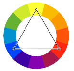

São aquelas que apresentam o maior constraste entre si, estando localizadas do lado oposto, do círculo cromático, uma da outra.
Se pegarmos uma cor primária a cor complementar será uma secundária, o mesmo vale para o oposto. Caso peguemos uma cor terceária sua cor complementar será outra cor terceária. Quando juntamos duas cores complementares sempre obteremos o cinza.

Cores análogas são aquelas que são vizinhas entre si. Por serem cores consecutivas elas tem baixo contraste entre si, mas ainda criam uma bela harmonia quando em um mesmo design.

Essa técnica quebra um pouco o ritmo das cores análogas, adicionando uma cor que cria um grande contraste com as três análogas.

Escolhemos duas cores análogas consecutivas, pulamos uma terceira cor (em qualquer direção), e escolhemos a quarta. Ela terá um certo contraste entre as outras mas não será tão grande assim.

Pouco usado já que pode não funcionar muito bem. Ao escolher a primeira cor você pula a cor vizinha e pega a próxima, repetindo isso mais uma vez.

Técnica muito utilizada, garante uma grande riqueza de cores, consiste em formar um triângulo dentro do círculo cromático. Ótimo contraste entre as cores.

Consiste em selecionar 4 cores com um contraste razoável entre elas, esse esquema gera um quadrado perfeito.

Consiste em escolher duas cores e pegar suas cores complementares, isso formará um tetraedo. Isso garante dois pares de cores contrastantes.

Usa apenas uma cor, variando apenas sua saturação e seu brilho. Gera pouco contraste entre cores, mas gera um resultado agradável aos olhos, conhecido como "degradê".